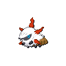

📖 英語版の図鑑説明
Larvesta’s body is warm all over. It spouts fire from the tips of its horns to intimidate predators and scare prey.
日本語訳
体全体が温かく、角の先端から炎を噴き出して捕食者を威嚇し、獲物を怯えさせる。
📝 この図鑑文に出てくる英単語
| 英単語 | 意味 | 品詞 | レベル |
|---|---|---|---|
| spouts | 噴き出す | 動詞 | 大学 |
| tips | 先端(複数形) | 名詞 | 高校 |
| horns | 角(複数形) | 名詞 | 高校 |
| intimidate | おどす | 動詞 | 大学 |
| predators | 捕食者(複数形) | 名詞 | 大学 |
| scare | おどかす | 動詞 | 中3 |
| prey | えもの | 名詞 | 大学 |
文法ポイント It spouts は現在形。図鑑では、そのポケモンがふだんから繰り返している習性を現在形で表します。主語が it なので動詞に s がついています。
💡 英語名「Larvesta」の由来
英語名「Larvesta」は、larva（幼虫）とVesta（ローマ神話のかまどの女神ウェスタ）を組み合わせた名前と考えられている。フランス語の名前は「Pyronille」で、pyro-（ギリシャ語で「火」を表す接頭語）、Pyraloidea（メイガの仲間）、chenille（イモムシ）から作られている。
出典 Bulbapedia
📊 メラルバの種族値
HP55
こうげき85
ぼうぎょ55
とくこう50
とくぼう55
すばやさ60
合計 360
❓ よくある質問
- メラルバの英語名は？
- メラルバの英語名は「Larvesta」です。
- メラルバの英語名「Larvesta」の由来は？
- 英語名「Larvesta」は、larva（幼虫）とVesta（ローマ神話のかまどの女神ウェスタ）を組み合わせた名前と考えられている。フランス語の名前は「Pyronille」で、pyro-（ギリシャ語で「火」を表す接頭語）、Pyraloidea（メイガの仲間）、chenille（イモムシ）から作られている。
- メラルバは英語版の図鑑でどう説明されている？
- 「Larvesta’s body is warm all over. It spouts fire from the tips of its horns to intimidate predators and scare prey.」と書かれています。日本語にすると「体全体が温かく、角の先端から炎を噴き出して捕食者を威嚇し、獲物を怯えさせる。」という意味です。
メラルバは第5世代（イッシュ地方）のポケモンです。第5世代（イッシュ地方）の英語名一覧 →